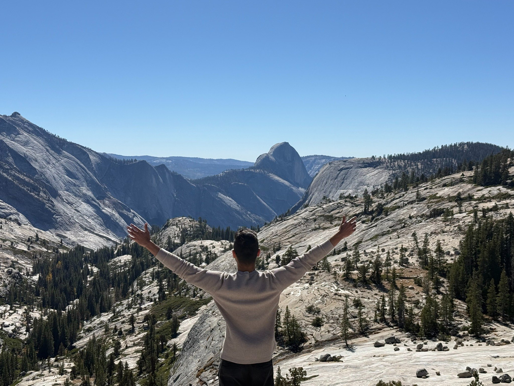
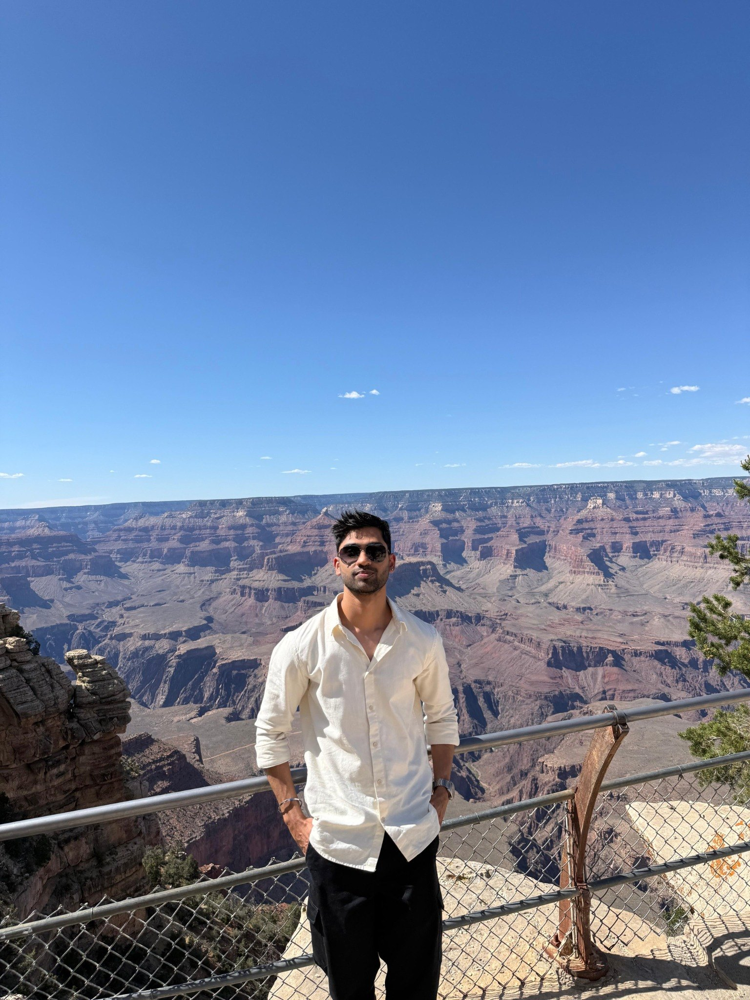
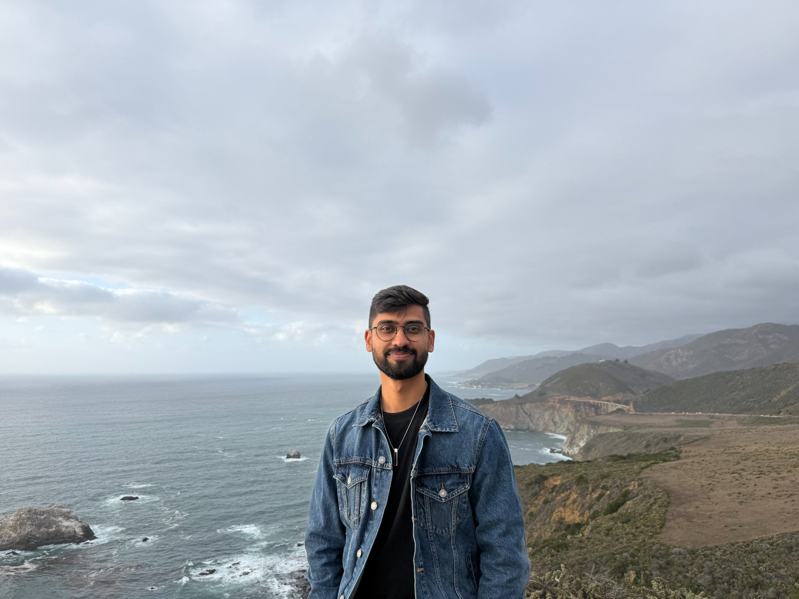

Visual AI for vehicle inspection
Building perception systems for vehicle damage detection, image quality assessment, and visual understanding across different vehicle views.
I'm a machine learning engineer working at the intersection of computer vision and multimodal AI. I like building systems that understand the world a little better — and exploring what happens when intelligence moves beyond the screen.
I work at PAVE.AI , building computer vision systems for AI-assisted vehicle inspection — from detecting and understanding damage to deploying models in real-world production environments.
I'm especially curious about multi-view understanding, visual reasoning, and physical AI. I enjoy taking ideas from papers and turning them into things that actually work.
Outside of engineering, you'll usually find me exploring a new place, getting outdoors, or collecting photos along the way.
A few problems I find interesting, spanning perception, reasoning, and production ML.
Building perception systems for vehicle damage detection, image quality assessment, and visual understanding across different vehicle views.
Exploring geometric correspondence and appearance cues to associate damage observations across multiple images of the same vehicle.
Building real-time quality checks that flag poor lighting, obstructions, framing issues, and off-center vehicles — helping users capture images ready for downstream AI.
Building teacher–student training workflows that transfer visual reasoning from powerful vision-language models into lightweight neural networks, enabling faster inference and efficient deployment across visual AI tasks.
Taking AI models from experiments to scalable production services — containerizing workloads with Docker, serving inference through NVIDIA Triton, and building APIs with FastAPI.
I'm exploring how machines can move beyond understanding images to perceiving, reasoning about, and interacting with the physical world.
This is my evolving learning roadmap into Physical AI — a collection of courses, papers, and projects I'm working through, from 3D perception to robotics and embodied AI.
Camera geometry, multi-view vision, depth and 3D reconstruction.
DUSt3R ↗Learning geometric 3D representations directly from images.
Modern Robotics ↗Rigid-body motion, kinematics, dynamics and robot control.
Hugging Face Robotics Course ↗Classical robotics and learning-based approaches to robot behavior.
LeRobot ↗Robot datasets, imitation learning and vision-language-action policies.
I like exploring places I've never been, spending time outdoors, and taking photos of the small details along the way. Sometimes the best ideas come when I'm away from my laptop.
This little corner is for the moments outside work — hikes, travels, and whatever catches my eye.


